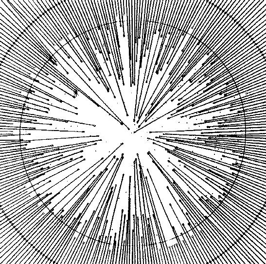

HSRED: Reduction Package for IDL

This page contains the needed
information and files in order to install HSRED on your computer.
HSRED has currently been tested on a large set of data from the
Hectospec instrument on the MMT, and a small amount of Hectochelle
data. The pages below allow you to
register (and thus get access to the HSRED code), install everything
you need, and then gives a walk through for how to run the code.
This documentation is a work in progress, so anything that is unclear
or incorrect should be reported to rcool@as.arizona.edu so that I
can get it fixed.